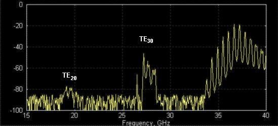
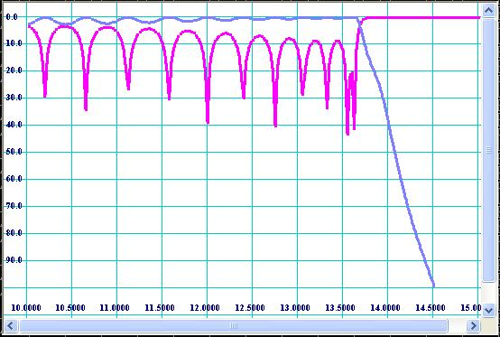
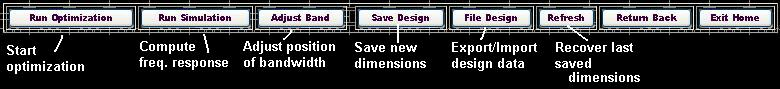
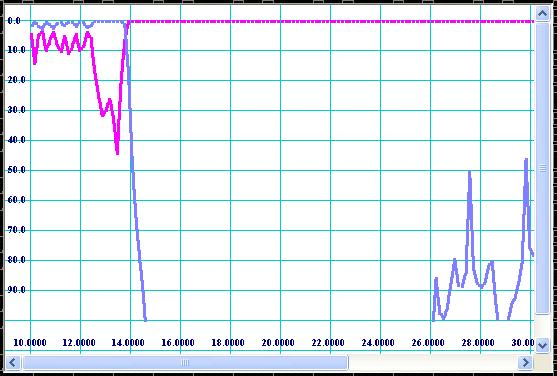
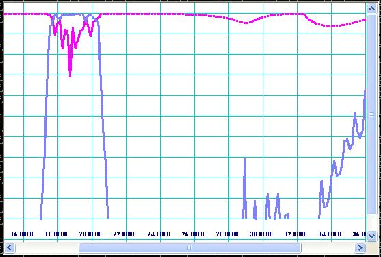
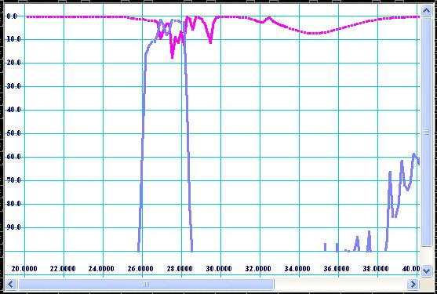
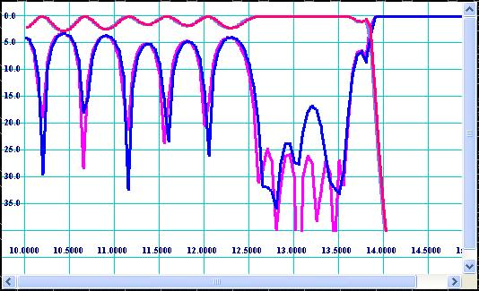

Spurious Pass-Bands of Corrugated
Filter
As
corrugated filters are based on two-dimensional structure, the frequency response
of any waveguide mode propagating in E-plane structure is of same first index
is a function of only b (propagation number). Therefore
frequency responses of TEN0-mode show similarity to the frequency
response of the dominant TE10-mode including its stop-bands as well
as its pass-bands. Generally existence of the pass-bands of high order modes
does not necessary mean the filter cannot reject the frequency spectrum
corresponding to those spurious pass-bands. Actual filter performance depends
on what kinds of modes are carrying the spectrum. For example, measured between
two waveguide-to-coaxial transitions, the filter may demonstrate solid
rejection up to second harmonic and even higher because the spurious modes are
not excited by setup components (See Fig 1). However, the "bad" modes
might be excited in the real system where the corrugated is intended to be used
(see Fig 2).

Figure
1: Transmission response measured using “regular” (symmetric)
calibration. TE-mode level is low because measurement components and filter are
symmetric. TE20-mode level is higher because it is excited by transformer steps
of filter.

Figure
2: Transmission response measured using “exciters” of higher order
modes (regular setup components do not excite them much). The both TE20- and
TE30-modes popped up, because not rejected by filter.
As
the modes composition of the macro system is unknown, it is better to assume
the worst case of existence of all the bad modes. Generally there is no way
eliminate the spurious pass-bands for a corrugated filter except moving them
out of the important frequency bands. The positions of pass-bands of spurious
modes depend on pass-band of the dominant mode and the width of corrugated
waveguide. Therefore it is a good idea to locate bands with potential lack of
rejection in respect to rejection requirements. The picture shown on Fig 3
tells how to predict pass-bands of spurious modes using the first design step
page.

Figure
3: Example of selection width of corrugated waveguide and cut-off point.
Synthesis
of Initial Dimensions
If
the “spurious” width is determined, other dimensions of corrugated
filter can be obtained by following simple procedure. The design procedure
presented here differs from conventional design procedures based on direct
synthesis of filter dimensions using equivalent circuit networks and special
functions or polynomials. The conventional procedures are found to be
practically ineffective because they make accent on pass-band performance
rather than higher stop-band where the prototype networks do not model
electromagnetic propagation in waveguide structures. Therefore the design
procedure used here is based on selection of prototypes of good upper stop-band
rejection and bad pass-band performance and further optimization of pass-band.
There are two types of prototypes used here. Prototype [option 1] is preferable if end frequency point of upper stop-band
is less than 2.5-3 times central frequency of the filter pass-band. The option
#1 provides better initial pass-band performance and therefore is easier to
design. The prototype [option 2] is
preferable to reject frequency spectrum up to 3-4 times of central frequency of
the pass-band. Since you have entered roll-off and width of corrugations in the
first design page, the synthesizer will try to find optimal values for Bmin
and Bmax
values, the network parameters of prototype.

Figure
4: Key dimensions of corrugated structure to be specified in order to generate
initial (draft) design.
Therefore
click button [Generate Dimensions] and go to next design page by clicking
button [Simulate Response] in order to simulate frequency response there (see
Fig 5).

Figure
5: Control panel.
Corrugated
Filter Simulator
This is a stand-alone verification tool. If you have already obtained initial
dimensions in previous design page, those dimensions will be automatically
transferred to the simulator. You may correct them or replace them with other
design, as the program module is independent from other design steps. In order
to simulate filter performance click button [Simulate] (see Fig 6).

Figure
6: Appearance of interface of the Simulator.
The
process of simulation can take not more than 1-2 seconds for Pentium 4
computer. For
slower computers a warning note shown on Fig 7 can appear during simulation.
The message means IE is unresponsive during computation, i.e. does not respond
on other events like mouse clicking or resizing windows. The Simulator and some
other design tools of my Design Studio are based on “client side”
VBScripts, but scripts usually take full control over browser while running.
The browser (Internet Explorer) is not designed as a computational tool, so its
computational efficiency and operational memory are very low. Therefore it is
recommended to cancel all other windows jobs and wait until computation
completed and [Simulate] button is released.
After simulation is completed and browser became responsive, you can see
plot of simulated frequency response of filter by pressing the next button [Plot Data].

Figure
7: A warning note may appear. The note warns that during simulation time [if it
is more than couple of seconds] Internet Explorer may become unresponsive [will
not act other events like mouse clicking, windows switching, resizing, etc.].
Click [Yes], if you want cancel simulations. Click [No] if you want to continue
simulation. If you run simulations, please do not try to execute other commands
or events until all computations are completed.
Response Plotter
If
you press [Plot] button, you can see plot of reflection and transmission in dB vs.
frequency. Please do not expect performance of initial design to be great. The
picture below (see Fig 8) shows how it usually looks like.

Figure 8: Typical
reflection and transmission performance of “draft” design.
Check position of bandwidth and cut-off (roll-off) in accordance with your
spec. If your spec do not contain requirements for lower (roll-off) rejection
(only harmonics), you have to specify the filter roll-off anyway as design
reference point because it effects bandwidth of spurious modes (see Fig 1). You
can correct bandwidth by repeating the second design step, i.e. slightly
changing Bmin and Bmax values of prototype and re-synthesizing the dimensions.
Simultaneously it is recommended to check rejection of higher frequency
spectrum (harmonics). If rejection is not adequate, more corrugations are
needed. Actually all initial parameters effect on potential performance of the
filter and there is no single recommendation how to design the best filter.
That is not like designing waveguide iris filter when filter bandwidth and
order are only parameters. This procedure is not unambiguously determined, i.e.
they might be different types of corrugated filters matching the same spec.
Therefore, you may try different initial parameters and subsequently compute
frequency response until you are satisfied with dimensions and rejection (not
pass-band) performance of the draft design.
Response
Optimizer
No
customer indeed will be happy with a harmonic filter having such an ugly
pass-band performance shown on Fig 8. Therefore the design is not completed
until the reflection ripples of the filter pass-band are not reasonably small.
Therefore we need an optimizing tool in order to improve the performance of
filter pass-band. Although pass-band performance of “draft” design
is so low, it might need some slight adjustment of corrugations and transformer
steps in order to make it much better. Optimizer is a tool, which runs various
combinations of dimensions and computes the path of improvement (gradient) of a
function of performance (functional). Therefore it is important to specify
optimization goals and limits (constrains) effectively in order to achieve the
best performance. Example of selection of optimization constrains is shown on
Fig 9.

Figure
9: Selection of optimization constrains.
The
optimization constrains have to be reasonable. For example, do not try to make
filter wider than you really need or optimize rejection of harmonics. The
optimizer is based on gradient method, which is good only for finding
“local” minimums, i.e. slight improvement. While optimizer is
running, the filter dimensions are changing. Over optimization may worsen other
parameters of filter as length and rejection of higher frequencies. Therefore,
periodically check transmission response over wide frequency sweep. The
optimization increment dX is the change of any of
dimensions (thickness of irises, depth of cavities, transformer length and
width) during one step of optimization. Initially the value of dX may be
selected as 0.002-0.004 times of the interface waveguide width. While the
reflection ripple is reducing, the increment has to be reduced up to ten times
(0.0002-0.0004 times interface width). Sometimes some of the dimensions (irises
between corrugations) might tend to unrealistic and even negative values. Therefore
you might need to specify the minimum thickness of irises, for example
0.018’’-0.022’’. While optimizing, the bandwidth of
filter can move along the frequency axis. You can slightly move the bandwidth
using appropriate button (see Fig 10). If the button [Adjust Band] is clicked,
a window with input line will appear. Enter a value slightly less than 1 in
order to reduce frequency plan and a value slightly greater than 1 in order to
move the frequency plan forward the frequency axis (increase).

Figure 10: Control panel
of the Response Optimizer.
The
same precautions have to be taken into account while using the optimizing tool.
The optimizer is based on the same type of VBScript code and is not responsive
while running. Please read warning notes marked red and written above and below
the Fig 7. Optimization process may
require from 40 to 100 optimization steps and from 15 to 45 minutes for an
experienced designer. At the end of optimization the pass-band frequency
response of filter should be much better (see Fig 11).

Figure
11: Frequency response of optimized filter.
Frequency
response of “optimized” filters might not be so “esthetically
beautiful” as Chebychev, Zolotarev and other polynomials look like, but
it can be really “optimal” in respect to formal specs. For example,
size, manufacturability, power handling and harmonics rejection are not
involved into conventional synthesis methods, but they are the most valuable
features of harmonic filters. The main advantage of optimization design methods
over the direct synthesis ones is flexibility and trade offs.
Final
Revision
During
and after optimization the filter has to be virtually tested over wide
frequency sweep for spikes and zones of lack of rejection. The Fig 12 shows
wide sweep frequency transmission response for the optimized design.

Figure 12: Response over
wide frequency sweep.
It
should be noticed that the response obtained by simulation over high frequency
spectrum corresponds to TE10-mode transmission and reflection only. It is
recommended to check the responses of spurious modes also. In order to do so,
simply replace internal width of corrugations (see Fig 6) by Ac/2
value for TE20-mode, Ac/3 for TE30-mode, Ac/4
for TE40-mode, etc and compute
frequency response. For our example, values 0.34 (0.68/2) and 0.2267 (0.68/3)
are entered for modes of TE20 and TE30 respectively and plots shown on Fig 13
and Fig 14 are obtained.

Figure
13: Plot of TE20-mode frequency response.

Figure 14:
Plot of TE30-mode frequency response.
As
it is mentioned above, the plots correspond to the worst case of propagation of
the spurious modes, if they are excited for 100%. Practically they might be
hardly noticed (as showed on Fig 1) and be reason of mysterious and unsolvable
“quality” problems further. Therefore is better to double check the
spurious positions during design process by such a simple trick.
Sensitivity Analysis
As
it is practically impossible to produce hardware with dimensions identically
equal to the dimensions assumed to be optimal (designed) because of inaccuracy
of real production methods, it is at least useful to know what kind of
performance the reality hardware would demonstrate. Different production
methods such as EDM, milling, casting, galvanic forming, water jets, and others
have their characteristic tolerances. In conformity with corrugated filters the
most popular production methods can be specified by rounding of straight
corners and deviation of positions of vertexes of cavities. The both effects
may be evaluated by Sensitivity Analyzer linked to the Simulator by [Tolerance]
button. Four types of manufacturing tolerances are specified there. H-plane
milling tool radius is radius of milling cutter applied to corrugation on
H-plane, i.e. if the filter is composed from two half bodies to be connected on
central H-plane by flanges. H-plane assembling is easier to produce by milling,
but it is less reliable than E-plane assembling because potential flange
contact problems. Although E-plane assembling has a big advantage such as
insensitivity for flange contact quality, it is seldom used because it is
larger than H-plane one, more sensitive for cavity rounding and it requires
deeper penetration of cutter (larger cutter is required). EDM is very accurate,
so tolerances and radii are negligible small. However it is expensive and
therefore production people do not like to use it for mass production. Galvanic
forming has advantage over “machine” methods, as it can build
filter as monolithic unit with no contact flanges. However galvanic methods are
less accurate and have environmental problems. It is direct responsibility of
design engineer to provide sensitivity analysis over possible production
methods in order to eliminate potential quality assurance problems. For example
the frequency response shown on Fig 11 may degrade to the response shown on Fig
15, if reasonable production errors are applied (radius of milling tool is
0.064’’ and random tolerances are +/- 0.0005’’).
Nevertheless, the “example” filter (press [Example] option of
Simulator) shows much less degradation of frequency response caused by the same
production tolerances.

Figure
15: Degradation of frequency response shown on Fig 11 caused by milling
tolerances.

Figure
16: Degradation of frequency response of “example” filter caused by
same milling tolerances.
Nevertheless
in accordance with sensitivity analysis the bad filter may be produced using
EDM method because EDM tolerances impact is more or less acceptable (see Fig
17).

Figure
17: Degradation of frequency response shown on Fig 11 caused by EDM tolerances.
The
analysis shows that the “example” filter is stable for production
errors and can be produced by “cheap” production methods. The other
filter should be produced by only accurate production methods and might be
expensive. Stability for production tolerances depends on many design factors
such as equivalent values and distribution of discontinuities along the filter
structure. Usually filters having wider design pass-band are more stable. I
have found some types of corrugated structures, for
example quarter-wave-coupled, being also more forgiving the production
errors.
Accuracy
There
is very strong and very wrong believe among engineers that “accurate EM
based” software, for example HFSS, is more accurate because licenses are
expensive. Contradictory, they think my Design Studio must be very inaccurate
only because it is a free online toy. I can claim that my Design Studio is more
accurate and hundreds of times faster than, for example, HFSS because it is
based on analytically pre-solved problems of scattering and propagation in real
(non-discrete) space. Practically the software accuracy is more sophisticated.
None of existing EM simulation tools can be called as “accurate”
because no exact solutions of corresponding Maxwell equations within
appropriate “practical” boundary conditions have been found. All
numerical methods ever been developed are approximate. The accuracy problem is
based on convergence problem, which is based on idea that “for any ε
>0 there always exist N, so for any n>N |An-A| < ε”. None
of existing EM numerical methods is approved over the convergence criterion by
mathematicians. Therefore “to converge or not to converge” is still
the question. So no trust to any simulation results should be given. Some of
simulation tools providers can argue this my point of view, but I am quite sure
no one would take my engineering responsibility for failure of “well
pre-simulated” designs. Therefore, I cannot also guarantee my Design
Studio is an “exact” design tool. However, I assume my Simulator
provides “practical” accuracy, i.e. slight shift of bandwidth and
return loss deviation for “design stable for errors” (see rubric
above) in respect to “reality”. Stability for errors is something
associated with design itself rather than with software. As computational
errors make similar effects for filter simulation results as production errors,
the designs stable for tolerances should be more
“simulatable”.
TO BE CONTINUED